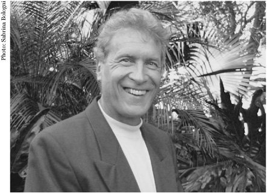

John Perkins has lived four lives: as an economic hit man (EHM); as the CEO of a successful alternative energy company, who was rewarded for not disclosing his EHM past; as an expert on indigenous cultures and shamanism, a teacher and writer who used this expertise to promote ecology and sustainability while continuing to honor his vow of silence about his life as an EHM; and now as a writer who, in telling the real-life story about his extraordinary dealings as an EHM, has exposed the world of international intrigue and corruption that is turning the American republic into a global empire despised by increasing numbers of people around the planet.
As an EHM, John’s job was to convince third world countries to accept enormous loans for infrastructure development—loans that were much larger than needed—and to guarantee that the development projects were contracted to U.S. corporations like Halliburton and Bechtel. Once these countries were saddled with huge debts, the U.S. government and the international aid agencies allied with it were able to control these economies and to ensure that oil and other resources were channeled to serve the interests of building a global empire.
In his EHM capacity, John traveled all over the world and was either a direct participant in or a witness to some of the most dramatic events in modern history, including the Saudi Arabian Money-laundering Affair, the fall of the shah of Iran, the death of Panama’s President Omar Torrijos, the subsequent invasion of Panama, and events leading up to the 2003 invasion of Iraq.
In 1980, Perkins founded Independent Power Systems, Inc. (IPS), an alternative energy company. Under his leadership as CEO, IPS became an extremely successful firm in a high-risk business where most of his competitors failed. Many “coincidences” and favors from people in powerful positions helped make IPS an industry leader. John also served as a highly paid consultant to some of the corporations whose pockets he had previously helped to line—taking on this role partly in response to a series of not-so-veiled threats and lucrative payoffs.

After selling IPS in 1990, John became a champion for indigenous rights and environmental movements, working especially closely with Amazon tribes to help them preserve their rain forests. He wrote five books, published in many languages, about indigenous cultures, shamanism, ecology, and sustainability; taught at universities and learning centers on four continents; and founded and served on the board of directors of several leading nonprofit organizations.
One of the nonprofit organizations he founded and chaired, Dream Change Coalition (later simply Dream Change, or DC), became a model for inspiring people to attain their personal goals and, at the same time, to be more conscious of the impacts their lives have on others and on the planet. DC seeks to empower individuals to create more balanced and sustainable communities. DC’s Pollution Offset Lease for Earth (POLE) program offsets the atmospheric pollution we each create, helps indigenous people preserve their forests, and promotes earth-honoring changes in consciousness. DC has developed a following around the world and has inspired people in many countries to form organizations with similar missions.
During the 1990s and into the new millennium, John honored his vow of silence about his EHM life and continued to receive lucrative corporate consulting fees. He assuaged his guilt by applying to his nonprofit work much of the money he earned as a consultant. Arts & Entertainment television featured him in a special titled “Headhunters of the Amazon,” narrated by Leonard Nimoy. Italian Cosmopolitan ran a major article on his “Shapeshifting” workshops in Europe. TIME magazine selected Dream Change as one of the thirteen organizations in the world whose Web sites best reflect the ideals and goals of Earth Day.
Then came September 11, 2001. The terrible events of that day convinced John to drop the veil of secrecy around his life as an EHM, to ignore the threats and bribes, and to write Confessions of an Economic Hit Man. He came to believe in his responsibility to share his insider knowledge about the role the U.S. government, multinational “aid” organizations, and corporations have played in bringing the world to a place where such an event could occur. He wanted to expose the fact that EHMs are more ubiquitous today than ever before. He felt he owed this to his country, to his daughter, to all the people around the world who suffer because of the work he and his peers have done, and to himself. In this book, he outlines the dangerous path his country is taking as it moves away from the original ideals of the American republic and toward a quest for global empire.
Previous books by John Perkins include Shapeshifting, The World Is As You Dream It, Psychonavigation, The Stress-Free Habit, and Spirit of the Shuar.
To learn more about John, to find out where he is lecturing, to order his books, or to contact him, please go to his Web site:
To discover more about the work of Dream Change, the 501(c)3 nonprofit that is transforming global consciousness, please visit: